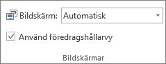

På många tangentbord används FN+F8.
Om du använder PowerPoint:
Flytta den här sidan genom att dra i dess flik så att den visas på skärmen som behövs justeras.
Välj skärmen som inte visar den här sidan.
Du kan fortsätta att justera skärmen efter det här steget.